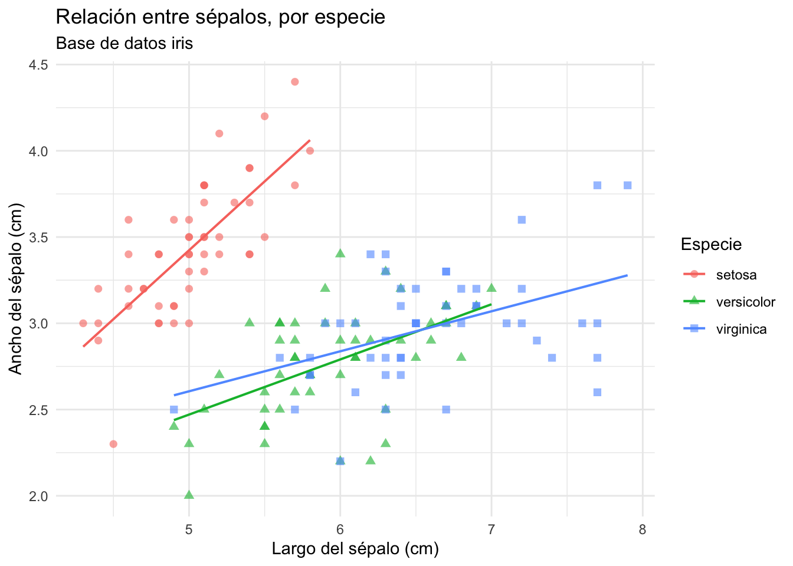
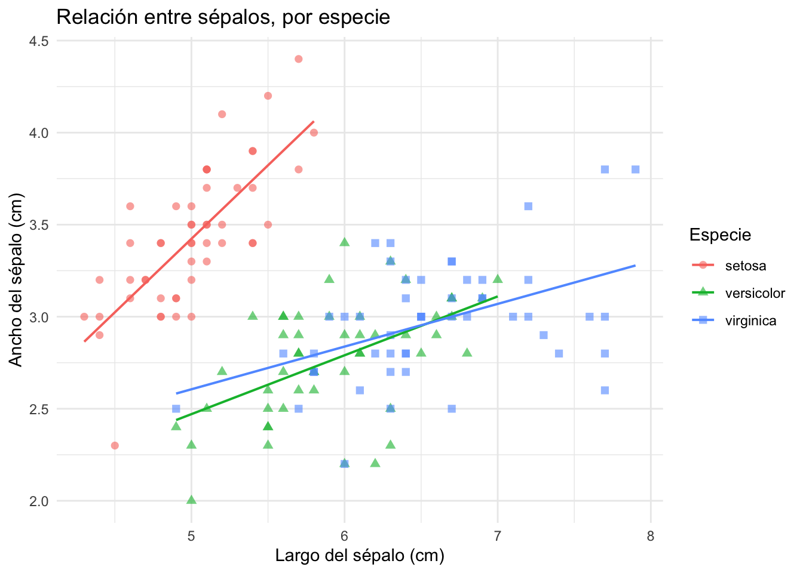

El código para agregar esta imagen es: .
Introducción
Texto
La parte principal de un informe en Quarto suele ser texto. En un fichero .qmd, todo lo que no sea encabezamiento código será interpretado como texto y lo mostrará tal cual. El texto de un documento .qmd es “simplemente” texto PERO está escrito en Markdown. Lo que escribamos en Quarto se mostrará tal cual en el documento final, pero es posible dar un poco de formato: negritas, cursivas, listas, enlaces de internet, etc…
En Quarto se pueden introducir formulas matemáticas (escritas en Látex). Para formulas en linea se usa el signo $ al inicio y al final de la expresión. Por ejemplo, el código $y_{i} = \alpha + \beta_{1}x_{i} + \beta_{2}x^{2}_{i} + \epsilon_{i}$ produce la siguiente ecuación: \(y_{i} = \alpha + \beta_{1}x_{i} \beta_{2}x^{2}_{i} + \epsilon_{i}\).
Para escribir la misma ecuación en una linea independiente, se usa el signo $$. Por ejemplo, el código $$y_{i} = \alpha + \beta_{1}x_{i} + \beta_{2}x^{2}_{i} + \epsilon_{i}$$ produce la siguiente ecuación:
Quarto permite introducir código de R en el documento de texto, evaluar tal código y mostrar los resultados directamente en el informe. A modo de ejemplo, comenzaremos mostrando un summary de la base de datos iris, que viene incluida en R.
summary(iris)
Sepal.Length Sepal.Width Petal.Length Petal.Width Species
Min. :4.30 Min. :2.00 Min. :1.00 Min. :0.1 setosa :50
1st Qu.:5.10 1st Qu.:2.80 1st Qu.:1.60 1st Qu.:0.3 versicolor:50
Median :5.80 Median :3.00 Median :4.35 Median :1.3 virginica :50
Mean :5.84 Mean :3.06 Mean :3.76 Mean :1.2
3rd Qu.:6.40 3rd Qu.:3.30 3rd Qu.:5.10 3rd Qu.:1.8
Max. :7.90 Max. :4.40 Max. :6.90 Max. :2.5
El trozo de arriba es un chunk de código R. Al compilar el documento (botón Render, en el panel, o quarto render archivo.qmd en la terminal), el código se ejecutará y mostrarán los resultados en el documento final. Los chunks pueden tener diversas opciones que permiten una mayor flexibilidad en como se muestra el código y los resultados. En Quarto estas opciones se escriben con la sintaxis #| dentro del chunk (a diferencia de RMarkdown, que las escribe entre llaves: {r, echo=TRUE}). También se puede fijar un valor por defecto para todo el documento en el YAML, con el bloque execute: (ver encabezado de este archivo), en vez de usar knitr::opts_chunk$set(). Las opciones más usadas son:
echo
eval
Por ejemplo, el chunk abajo mostrará el código (echo: true), lo evaluará y mostrará los resultados en el documento final (eval: true). Así se ve:
a <-summary(iris)print(a)
Sepal.Length Sepal.Width Petal.Length Petal.Width Species
Min. :4.30 Min. :2.00 Min. :1.00 Min. :0.1 setosa :50
1st Qu.:5.10 1st Qu.:2.80 1st Qu.:1.60 1st Qu.:0.3 versicolor:50
Median :5.80 Median :3.00 Median :4.35 Median :1.3 virginica :50
Mean :5.84 Mean :3.06 Mean :3.76 Mean :1.2
3rd Qu.:6.40 3rd Qu.:3.30 3rd Qu.:5.10 3rd Qu.:1.8
Max. :7.90 Max. :4.40 Max. :6.90 Max. :2.5
Si sólo queremos mostrar el código (echo: true) pero no evaluarlo (eval: false), escribimos lo siguiente:
a <-summary(iris)print(a)
Por el contrario, si queremos evaluar el código, mostrar sus resultados, pero no mostrar el código mismo, escribimos:
Sepal.Length Sepal.Width Petal.Length Petal.Width Species
Min. :4.30 Min. :2.00 Min. :1.00 Min. :0.1 setosa :50
1st Qu.:5.10 1st Qu.:2.80 1st Qu.:1.60 1st Qu.:0.3 versicolor:50
Median :5.80 Median :3.00 Median :4.35 Median :1.3 virginica :50
Mean :5.84 Mean :3.06 Mean :3.76 Mean :1.2
3rd Qu.:6.40 3rd Qu.:3.30 3rd Qu.:5.10 3rd Qu.:1.8
Max. :7.90 Max. :4.40 Max. :6.90 Max. :2.5
Por último, si queremos NO mostrar el código (echo: false), SI evaluarlo (eval: true), PERO NO mostrar los resultados (output: false), escribimos:
Que el código haya sido evaluado significa que el objeto “a” existirá en la memoria y podrá ser usado para posterior análisis.
Gráficos
También podemos mostrar gráficos producidos en R. Notar que los paquetes necesarios para implementar un determinado análisis (ggplot2 y tidyverse, en este caso) deben ser previamente cargados.

Notar que ahora, además de los puntos, agregamos una recta de regresión por especie (geom_smooth), títulos y etiquetas de ejes (labs) y un tema visual (theme_minimal). El mensaje que entrega geom_smooth se oculta con la opción message: false.
Si además de ver el gráfico queremos mostrar el código que lo generó, usamos echo: true:
iris %>%ggplot(aes(x = Sepal.Length, y = Sepal.Width, colour = Species, shape = Species)) +geom_point(alpha =0.6, size =2) +geom_smooth(method ="lm", se =FALSE, linewidth =0.7) +labs(title ="Relación entre sépalos, por especie",x ="Largo del sépalo (cm)",y ="Ancho del sépalo (cm)",colour ="Especie", shape ="Especie" ) +theme_minimal()

Callouts
Quarto agrega bloques especiales, los “callouts”. Sirven para resaltar notas, advertencias o tips sin necesidad de código adicional. Se escriben así:
::: {.callout-note}
Esto es una nota.
:::
Y se ven así:
Note
Esto es una nota.
Warning
Esto es una advertencia.
Tip
Esto es un tip.
Los tipos disponibles son note, warning, important, tip y caution.